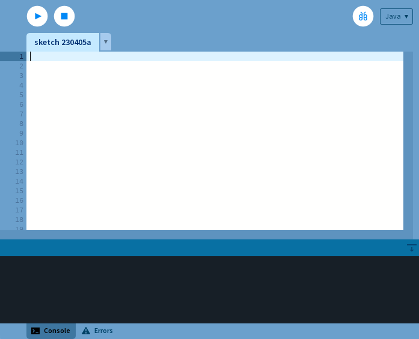
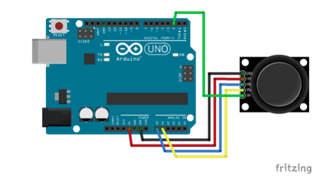

This lab introduced us to Processing and how to communicate between the Ardunio and Processing.
All materials but the multimeter are sourced from the Elegoo Super Starter Kit UNO R3 Project Kit
To use Processing, I first had to download it from here. The below screenshot shows the processing window.
Next, using processing, I wrote a script to draw circles following the position of my mouse. The first video shows the script renders white circles and the second shows smaller red circles. These circles were drawn using the ellipse() function. The code for the second script can be seen here
To interface with processing, we'll be using the arduino and joystick module. The below wiring diagram shows how the joystick should be connected.
To talk with processing using the joystick, the Arduino needs to output a specific string of values to the serial monitor. The format is as such: xVal:VALUE;yVal:VALUE;swVal:VALUE. To achieve this I wrote a sketch which can be viewed here, and the result is shown below.
By modifying the provided code, I mapped the x and y values of the joystick to the borders of the processing window and used the mapping to render ellipses. Also, when the joystick button is pressed, the color of the ellipse changes to black. The code can be seen here and is shown running below.
This part of the lab tasked us to create our own processing visualization with three input components. I chose to use the joystick, a push button, and a potentiometer. The push button changes the red value of the fill() from 0 to 255, while the potentiometer changes the blue value. The code can be seen here and is shown working below.